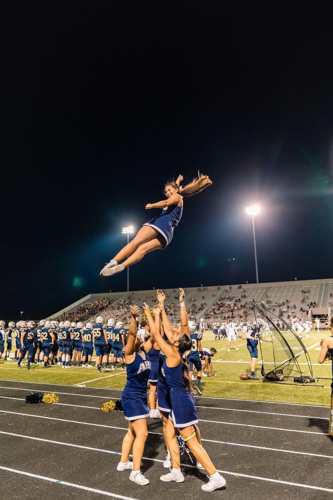
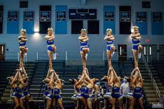
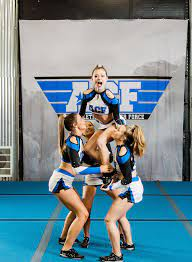
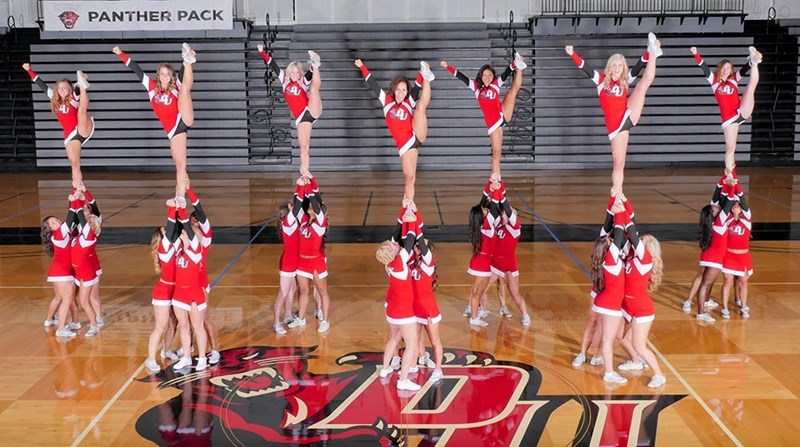

Everything you need to know about cheerleading!
Sideline cheer: Cheerleaders engage with the fans and keep the fans spirit high during events and school sports such as football games. They prepare cheer routines to perform during timeouts and half-times. Sideline cheer is generally done in the fall and winter.
Competitive cheer: Teams perform a 2 and a half minute routine with music that includes stunts, jumps, tumbling. Teams are judged by a panel of cheerleading experts on difficulty and execution. Competitive cheer goes on in the winter along with Sideline cheer. Competitive cheer is a high energy sport where a 2 and a half minute routine is scored by a panel of judges on difficulty and execution. It is a high risk activity due to its stunting contact and its strenuous tumbling components.
DEFINITION:Cheerleading is an activity in which the participants (called cheerleaders) cheer for their team as a form of encouragement. It can range from chanting slogans to intense physical activity. It can be performed to motivate sports teams, to entertain the audience, or for competition. Cheerleading routines typically range anywhere from one to three minutes, and contain components of tumbling, dance, jumps, cheers, and stunting. Cheerleading originated in the United States, and remains predominantly in America, with an estimated 3.85 million participants as of 2017. The global presentation of cheerleading was led by the 1997 broadcast of ESPN's International cheerleading competition.
Here on my website you will find everything you need to know about Competitive and Sideline cheer!
   